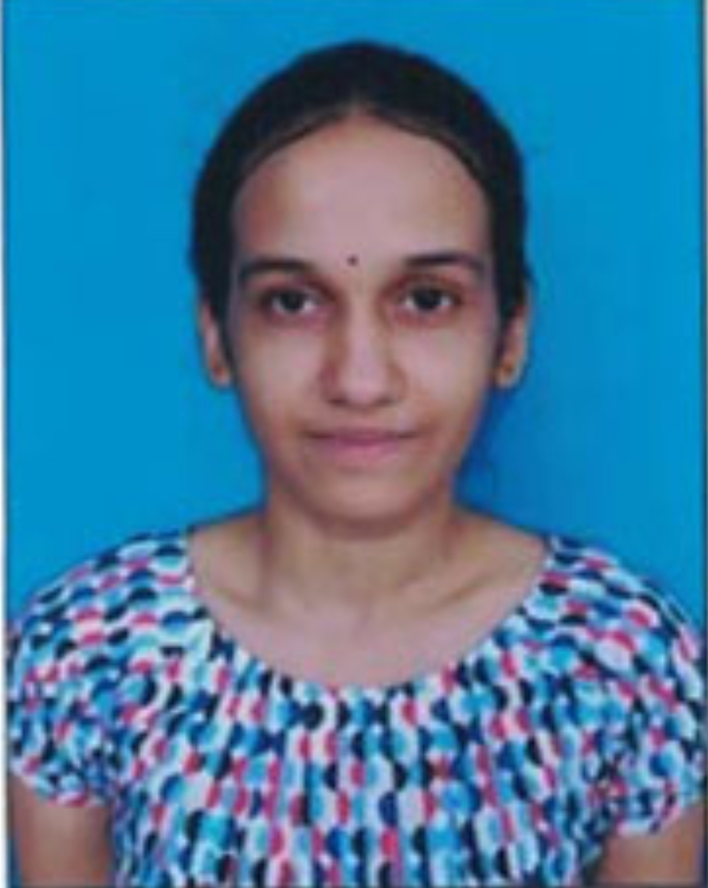

AKSHARA MOKKAPATI
Developer
CONTACT
Proactive individual seeking web developer work that allows for implementation of communication, service and design skills to the programming essentials while encouraging creative thinking and problem solving
SRM University, Amaravati, Andhra Pradesh
B.Tech Computer Science Engineering, CGPA: 9.57/10 till 3rd Semester| Graduation by May, 2022
Schooling: Narayana IIT Olympiad School, Rajahmundry, Andhra Pradesh, India State Board with 98.0% in 10th grade and 98.0% in 12th grade | March, 2018
Computer Languages: C, C++, Python, HTML, Java, Javascript, CSS
Platform/ Operating systems: Windows, MacOS, LINUX
Packages: Microsoft Office, G Suite
Communication and collaboration tools: Slack, Skype
>Machine learning algorithm for road traffic management
>Learning App for MBBS students for PG entrance preparation
>Online Examination System (using JAVA Swing)
ACM Student Chapter, Yogoda Satsang Society of India